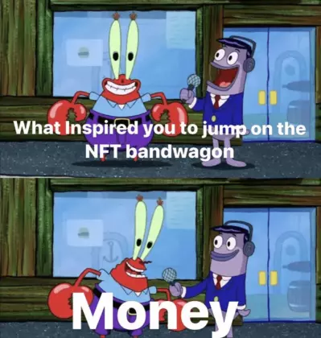

Что это вообще такое? Это какая-то пирамида?
NFT — это очередная модная выдумка программистов, которая по сути является уникальной записью в распределенном реестре (блокчейне). Как правило, ее можно продать/передать другому человеку. Слышали про реестры акционеров или недвижимости? Вот это оно самое, просто децентрализованное и на блокчейне. Запись vr в реестре недвижимости подтверждает, что вы владеете определенной квартирой. Запись в реестре акционеров подтверждает, что вы владеете определенным количеством акций определенной компании.
Запись в виде NFT (токен) подтверждает… а вот тут как раз всё и начинается: токен может подтверждать совсем разные штуки, а может не подтверждать ничего — это зависит исключительно от желания компаний и общества признавать или не признавать их. Здесь может быть как эфемерное «владение оригиналом цифрового произведения», которое не дает совсем никаких прав, так и полноценные наборы прав, предусмотренные соглашением с NFT-биржей и создателем токена.
И нет, NFT это не пирамида и не обязательно мошенничество — как и прочие технологии, ее могут
использовать по-разному.
Но нельзя отрицать, что концентрация скам-проектов на NFT сейчас
превышает
разумные пределы.
Это же только для «владения» картиночками?
Нет. Хоть NFT и получили свой взрывной рост из-за торговли картинками, это не единственное их применение. Просто так получилось, что именно с картинками эта штука работает лучше всего. По сути это то же самое, что и владение оригиналом художественного произведения — если вас не смущает, что есть люди, готовые заплатить 72 миллиона долларов за «Белый центр (жёлтое, розовое и лиловое на розовом)» Марка Ротко, то и продажа NFT как подтверждения подлинности «оригинала» не должна сильно удивлять.
Ключевая разница в том, что поучаствовать в сделках с NFT обычному человеку намного проще, чем в покупке реальных картин, из-за чего и сформировался довольно большой и активный рынок, где все верят в «теорию большего дурака». Вот в этом исследовании (eng) пишут, что в марте 2021 токенов продавалось на 10 миллионов долларов в день.
Как собаке пятую ногу. Помните пример с реестром недвижимости? Видимо, теперь в условном Assassin’s Creed мы будем покупать не скин огненной брони, а сертификат, который даёт скин огненной брони в игре. Дополнительное логическое звено буквально без какого-то смысла, кроме маркетингового.
Я не отрицаю, что, наверное, можно построить хорошую игру целиком на концепции невзаимозаменяемых токенов, но в ближайшие годы это удел авторских инди. Скажем, у Молиньё может выйти что-то этакое, хотя на текущий момент его концепция ничем не отличается от Star Citizen, авторы которого продают игрокам виртуальные кораблики и гектары без всяких блокчейнов (а олды могут вспомнить Entropia Universe с торговлей виртуальной землей). Еще можно вспомнить проект «Криптокотята», который с натяжкой относится к играм: он основан на механизме «скрещивания» и получения новых уникальных котят, что как-то оправдывает применение NFT.
В крупных же проектах вроде S.T.A.L.K.E.R. 2 или игр Юбисофт токены пока планируется использовать просто как обертку для традиционных технологий выкачивания денег из игроков: продажи скинов, бонусов за предзаказы и так далее. Попробуйте сами найти разницу между «разработчики продадут NFT на облик человека в игре» и «разработчики добавят в игру внешность пяти бэкеров, вложивших по тысяче баксов».
Или между обещанным маркетплейсом Юбисофт и торговой площадкой Стима.
Да, сторого говоря, «под капотом» они будут работать на разных технологиях (и то пока это просто слова), но для игроков, скорее всего, не будет никакой разницы. Вам безразлично, фиксируется ли информация о вашей покупке где-то в централизованной базе данных или в блокчейне — важно лишь то, что вы получаете в игре доступ к определенному контенту, за который заплатили. Ну а компании выгодно привлечь внимание к своему продукту использованием модных слов

Наверное, зато NFT гарантирует, что разработчик не отберет мою внутриигровую покупку??
Неа. То, что сама технология NFT не позволяет отбирать токены, ни разу не гарантирует, что вы сохраните права на ваши цифровые ассеты. Вспоминаем, что NFT — это сертификат. Разработчик не может отобрать у вас сам сертификат, но ему ничего не мешает «отвязать» его от внутриигрового контента. Снова разные принципы работы «под капотом» с идентичными результатами для игроков. Сравните: «Юбисофт отобрала у игроков уникальную винтовку» и «Юбисофт перестала давать доступ к уникальной винтовке владельцам NFT на неё».
Но если технология NFT не приносит в игры ничего нового, для чего она нужна?
Чтобы геймеры горели, СМИ писали о этих играх, а советы директоров гордо отчитывались акционерам о внедрении прорывных технологий.

Единственное геймплейное применение NFT, которое мне пока приходит в голову (и было упомянуто в комментах где-то здесь) — это возможность задействовать один и тот же токен в различных играх. Так как реестр существует отдельно, Юбисофт сможет, скажем, продавать сертификат на облик Сэма Фишера, который будет активироваться в Rainbow Six, Division и Watch Dogs. Впрочем, ничего не мешало им и раньше реализовать нечто подобное без применения блокчейна, хах.
В остальном это та же ситуация, что и с хайпом по нейросетям, биг дате, аджайлу, etc., ярлыки которых лепили на всё подряд (что не отменяет наличия проектов, действительно реализованных на новых технологиях, но часто ли были случаи, когда огромные игровые корпорации экспериментировали и создавали что-то качественно новое?). Впрочем, в комментах можем побрейнштормить насчет перспективных идей!
Окей, тогда беспокоиться пока рано?
Или поздно. Тут как посмотреть: возможно, мы проиграли эту войну еще тогда, когда нормально восприняли внутриигровые покупки в синглплеере. Я бы предлагал бороться с ними, с корнем проблемы, а не её декорациями в виде NFT. С другой стороны, сейчас можно отлично нарубить кармы на очередном полыхании в комментах, почему нет.
Особых минусов от NFT в ближайшее время ждать тоже не стоит — поверьте, маркетинговые отделы могут испортить вам удовольствие от игры и без новомодных блокчейнов. Ну а по поводу трат энергии на расчет хэшей давайте не будем — все равно никто не поверит, что залайкивающие мемы про Грету и «получай, природа!» геймеры вдруг стали защитниками окружающей среды.